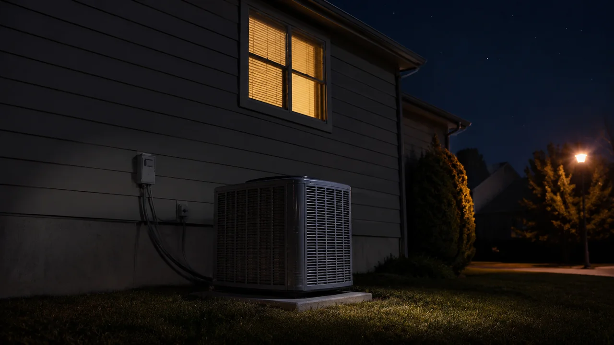

Advertising Disclosure: This site may receive compensation for service connections made through this page. Content is editorially independent.
"24-hour HVAC repair" is a marketing claim with three very different real-world meanings. Tier 1 operators dispatch an on-call technician at 3 a.m. with a typical 60-to-180-minute arrival window. Tier 2 operators answer phones around the clock but queue your call for the morning. Tier 3 is just an answering service that books a daytime slot. Most consumers who Google "24-hour HVAC near me" assume they're getting Tier 1; in most metros, the majority of advertised "24/7" companies are actually Tier 2. The single phone question that separates the tiers: "Can you have a technician at my house tonight, and what is the earliest arrival window?" A specific time means Tier 1; "first thing in the morning" means Tier 2; "we'll call you back" means Tier 3. This guide covers how to verify a true 24-hour operator, what arrival windows are realistic, what work can actually be done overnight, and how holidays and weather change the math.
It's 11 p.m. The AC stopped working two hours ago. The house is still 84 F because no one opened the windows. You Google "24-hour HVAC repair near me" and get a dozen results, all of them advertising "24/7 service" and "open now." You call the top one. They answer on the second ring. The friendly dispatcher books you for "first available" — tomorrow at 9 a.m. You call the next one. Same script. The third one says they can have a tech out tonight, but it'll be a 3-to-4-hour wait and they need a credit card on file before dispatch. That third one is the only company in your market that actually delivers 24-hour service. The other two are running a 24/7-marketing-but-daytime-dispatch model that's the industry norm. This guide is how to spot the difference in the first 90 seconds of the phone call, what arrival windows to actually expect, and what physically cannot be repaired overnight even at a true 24-hour operator.
This is the availability-focused companion to our emergency HVAC service cost guide, which covers the pricing layers (after-hours surcharge, minimum service charge, weekend/holiday multipliers). For the canonical 2026 pricing of the underlying repair itself, see costs.html. For the decision of whether to call now or wait until morning, that triage lives in the cost guide article. This article's unique territory is the operational reality of what "24-hour HVAC" actually means in 2026 — and how to find an operator who delivers it.
The Three Tiers of "24-Hour" HVAC Service
Every operator that advertises 24/7 HVAC service falls into one of three operational tiers. The advertised promise is identical; the reality is dramatically different. Knowing which tier you're calling determines whether you get a technician tonight or just a friendly conversation.
Tier 1: True 24-Hour Dispatch (the real thing)
An on-call technician is rotated through a 24/7 schedule. When the dispatcher takes your call at 3 a.m., they radio or text the on-call tech, who is at home or in a service truck and can be moving toward your house within 30 to 60 minutes of authorization. Typical arrival window: 60 to 180 minutes from authorization in normal demand; 3 to 5 hours during weather-driven demand spikes. How to spot it on the phone: the dispatcher commits to a specific arrival window in hours, not "morning" or "first available." Examples of legitimate Tier 1 phrasing: "I have a tech finishing a call in Mesa, he can be at you between 1:30 and 2:30 a.m." or "We're at full capacity tonight, next available is 5 a.m." Both commit to a clock time before sunrise.
Tier 2: 24-Hour Phones, Morning Dispatch (the most common)
A call center is staffed around the clock. The center takes your call, logs your information, and books you into the morning technician rotation. The dispatcher is friendly and informative, and the booking process feels real, but no truck rolls until the standard shift starts at 7 or 8 a.m. Typical arrival window: 7 to 11 a.m. the next day, in priority order based on when you called and the severity of your description. How to spot it on the phone: the dispatcher offers "first available" or "first thing in the morning" without committing to a clock time. Sometimes they offer a "priority morning slot" for a 2x surcharge that still doesn't put a truck on the road until daylight. This is the most common 24/7 operator structure in 2026 because phone-answering is cheap and after-hours dispatching is expensive. It is technically not false advertising — the phone is answered 24/7. But homeowners who call at 11 p.m. expecting same-night service are routinely disappointed.
Tier 3: After-Hours Answering Service (the call-back model)
The "24/7" line goes to a third-party answering service that takes your name and number, then forwards a voicemail to the company's on-call dispatcher who calls you back the next morning. There is no live human troubleshooting your problem at 2 a.m.; there is no system in place to dispatch anyone. Typical arrival window: daytime appointment booked when they return your call, often 8 to 12 hours after your initial outreach. How to spot it on the phone: the person who answers identifies themselves as an answering service rather than a dispatcher, or the script is generic enough that it could apply to any service business. Tier 3 operators usually drop the "24/7" claim from their website footer but keep it in the Google Business Profile and ad copy where competitors do the same.
It's easy to assume you're calling Tier 1. In a typical metro of 1 million people, our experience is that 1 to 3 operators run a true Tier 1 model, 8 to 15 operators run Tier 2 with 24/7 marketing, and the long tail runs Tier 3. The phone-answer-rate looks identical across all three tiers — the truck-roll rate is what differs.
How to Verify You've Got a Real 24-Hour Operator
Four signs separate a Tier 1 operator from a Tier 2 dispatcher in the first 90 seconds of the call. Run through them before you authorize service, before you give a credit card, and before you assume a truck is on the way.
- Specific clock-time commitment. "We can have someone there between 12:30 and 2:00 a.m." is Tier 1. "First thing in the morning" is Tier 2. "We'll have a dispatcher call you back" is Tier 3. Always force the dispatcher to commit to a clock time before sunrise.
- Live diagnosis of your problem. Tier 1 dispatchers triage on the phone — they ask what's broken, what model the system is, how long it's been failing — because they need to brief the on-call technician. Tier 2 dispatchers just collect your address and book a slot. If the person on the phone isn't asking technical questions, the truck is not rolling tonight.
- Credit-card-on-file requirement. Tier 1 operators almost always require a credit card on file before dispatch because the after-hours economics break otherwise. Tier 2 books your slot without payment because no truck is committed. The credit card requirement feels invasive but is actually the strongest signal that a truck will physically arrive.
- The "Section 608" question. Refrigerant work is federally regulated under EPA Section 608. If your problem involves refrigerant (low-pressure cutoff, frost on the lines, suspected leak), ask the dispatcher: "Will the overnight tech be Section 608 certified?" A Tier 1 operator has on-call techs who are certified; a Tier 2 operator might not have certified techs on the overnight rotation. If they hedge or say "the morning tech will handle that," you've identified Tier 2.
If three of four signs point to Tier 1, you're getting a real overnight service call. If two or fewer, you're getting a morning appointment. Either is fine — just know which one before you commit to waiting up for a truck that isn't coming.
Realistic Arrival Windows by Time-of-Night
Even at true Tier 1 operators, arrival windows are wider than the advertised "60-minute response" because the after-hours technician pool is small and demand is uneven. Realistic 2026 windows for a typical metro:
| Time of call | Normal demand | Weather-driven demand |
|---|---|---|
| 5 p.m. – 9 p.m. (early evening) | 60–120 min | 3–5 hours |
| 9 p.m. – midnight | 90–150 min | 3–6 hours |
| Midnight – 3 a.m. | 90–180 min | 3–7 hours or queued for sunrise |
| 3 a.m. – 6 a.m. | 60–180 min | often queued for 7 a.m. shift |
| Holiday evenings | 2–4 hours | 4–8 hours; many operators close |
Estimated ranges based on industry experience. Actual windows vary by region, operator capacity, and current demand. "Weather-driven demand" means: summer heat-index above 95 F, winter outdoor below 25 F, or active weather event (storm, ice, heatwave) in the metro.
Two patterns drive the windows. First, the deeper into the night, the fewer on-call techs are awake and dispatched, so the wait climbs even at fixed demand. Second, weather-driven demand collapses the system — the same Tier 1 operator that delivers in 90 minutes on a 70 F weeknight delivers in 5 hours on a 99 F heat-index Saturday because every tech in the rotation is already on a call.
What Actually Closes Even at 24-Hour Shops
Even a true Tier 1 operator can't physically deliver every kind of repair overnight. Several things close even when the dispatcher is taking calls:
- Parts depots. HVAC parts wholesalers close at 6 or 7 p.m. and don't reopen until 7 a.m. If your repair needs a non-standard part (a brand-specific control board, an uncommon capacitor microfarad, a rare blower motor), the technician may diagnose tonight but can't fix until parts arrive in the morning. Common items (universal capacitors, contactors, condenser fan motors in standard horsepower) are usually on the truck.
- Permit offices. Any repair requiring a permit (full equipment replacement, electrical service upgrades) can't be permitted overnight. The tech can diagnose and quote, but the actual replacement is queued for the next business day.
- Specialized certifications during slow hours. Section 608 Type II refrigerant certification is required for split-system refrigerant work. Not every overnight tech holds the cert; if yours doesn't, refrigerant work waits for the morning shift even though the diagnosis happens tonight.
- Weather-related no-travel. In severe weather (active ice storm, blizzard, lightning), companies pull techs off the road for liability reasons. The dispatcher will still answer; the truck will not roll until conditions clear. Common in mountain markets, the upper Midwest, and the Northeast.
- Inspector callouts. If the repair involves a gas line, the local utility's inspection schedule is daytime-only. A leaking gas valve gets shut off overnight, but the official inspection and certified repair happen during business hours.
Knowing what's physically closed overnight helps you frame realistic expectations. A capacitor swap or contactor replacement can be done at 2 a.m. with parts off the truck. A compressor replacement, gas-valve repair, or full system replacement essentially cannot — the diagnosis is overnight, the fix is morning.
We connect homeowners with independent HVAC technicians 24/7 in many areas.
Call Now — (844) 582-1795Disclosure: We are a referral service and may receive compensation for qualified calls. Calls may be routed to an independent provider network and may be recorded. Pricing and availability vary by provider and location.
Holiday and Weather Reality
Two demand patterns reliably break the 24-hour HVAC service model: federal holidays and weather events. Both deserve their own expectations.
The four big holidays
Thanksgiving, Christmas Eve, Christmas Day, and New Year's Day are the days when even reliable Tier 1 operators commonly close. The reasons are practical: parts depots are closed (so refrigerant work and rare-part repairs are impossible anyway), holiday-pay surcharges for technicians make the economics tight, and the call volume is comparatively low because non-critical issues tend to get delayed. If your situation is genuinely safety-tier on a holiday, call the operator anyway — some independents do take the rotation, and you may also have a regional emergency-services network that picks up holiday gaps. If your situation is comfort-tier on a holiday, expect a 2-to-3-day delay at standard rates rather than a 4x holiday-surcharge call. The math is rarely worth the premium.
Weather-driven demand spikes
Weather events that affect HVAC demand: summer heat waves above 95 F heat-index, winter cold snaps below 20 F outdoor, ice storms, blizzards, and post-storm power-restoration weeks. During these events, every operator in the metro is at capacity simultaneously. Expected outcome: Tier 1 operators stretch arrival windows to 4 to 8 hours, Tier 2 operators close their phone lines entirely, and Tier 3 operators stop returning calls. The two ways homeowners get fast service during weather events: (1) be already on a service contract with the operator (priority scheduling tends to hold even during demand spikes), or (2) accept a 2x-to-3x premium on a referral network that can pull from a wider provider pool. The cost guide article covers both options. The bottom line: weather is when 24-hour service collapses, and weather is also when you need it most.
By Region: When 24-Hour HVAC Demand Peaks
Different metros have different 24-hour-HVAC reality depending on climate. Four representative examples:
Mesa, Arizona (hot-dry): Late June through August, summer demand peaks. AC failures at 8 p.m. in 110 F daytime heat are genuinely safety-tier when vulnerable occupants are involved — nighttime indoor temperatures can climb past 95 F. Mesa and the broader Phoenix metro have 5 to 8 true Tier 1 operators during peak season but routinely run 4-to-6-hour windows mid-July. October through April, demand drops to almost nothing and Tier 1 operators thin to 1 to 2.
Syracuse, New York and Madison, Wisconsin (cold-climate): December through February, no-heat calls dominate. Syracuse and Madison both run 3 to 5 Tier 1 operators during the heating-emergency season but see 4-to-7-hour windows during cold snaps below 0 F because outdoor work slows technician throughput. Frozen pipes become a secondary risk when no-heat extends past 12 hours indoor below 50 F. April through October, heating-emergency demand drops; AC-emergency demand is moderate; arrival windows ease to 1 to 2 hours.
Huntsville, Alabama (mixed-humid): Both heating-emergency season (December through February) and cooling-emergency season (June through August) generate demand. Huntsville is a smaller metro — 2 to 3 true Tier 1 operators are typical, with longer arrival windows than larger Southern metros simply because the after-hours technician pool is smaller. Spring storms add a weather wildcard.
The pattern across regions is consistent: 24-hour HVAC availability is real where demand justifies the after-hours staffing cost. Major metros support real Tier 1 operators year-round; smaller metros support them seasonally; rural markets often have no true Tier 1 within 60 to 90 miles — nighttime service genuinely means morning service.
Trusted Industry Sources
The guidance in this article is consistent with published recommendations from:
- EPA — Section 608 Technician Certification
- CDC — Carbon Monoxide Poisoning
- U.S. Department of Energy — Maintaining Your Air Conditioner
- ACCA — Air Conditioning Contractors of America (standards)
A technician can walk you through the diagnosis tonight and itemize the bill before any work starts.
Call Now — (844) 582-1795Disclosure: We are a referral service and may receive compensation for qualified calls. Calls may be routed to an independent provider network and may be recorded. Pricing and availability vary by provider and location.
Frequently Asked Questions
Almost certainly yes for major metros and suburbs — but with a major caveat. Marketed "24/7 HVAC service" falls into three very different tiers. Tier 1 (true 24-hour) means a technician on a rotating on-call shift can be dispatched at 3 a.m. and arrive in 60 to 180 minutes. Tier 2 (24-hour phones) means a call center answers around the clock, but the soonest tech is queued for morning. Tier 3 (call-back) means you reach an answering service that books you a morning slot. The phone gets answered in all three; the truck rolls in only one. Before authorizing a service call, ask explicitly: "Can you have a technician at my house tonight, and what is the earliest arrival window?" That single question separates the three tiers immediately. Rural markets and small towns often only support Tier 2 or Tier 3 overnight — the next real Tier-1 operator may be 60 to 90 miles away.
Realistic overnight arrival windows in 2026 run 60 to 180 minutes for true Tier 1 operators in major metros, and longer in cold-weather emergencies when demand spikes. Friday and Saturday night summer AC failures and weeknight winter no-heat calls below 25 F outdoor produce 3-to-5-hour waits at most operators because call volume overwhelms staffing. The advertised "60-minute response" is the operator's best-case scenario, not the typical experience during weather-driven demand. Holidays and major weather events extend windows further — a Thanksgiving evening no-heat call in a cold-climate market commonly sees 4-to-6-hour windows. If your situation is true safety-tier (CO alarm, gas smell, electrical burning), call 911 first and only loop the HVAC dispatcher in after the immediate emergency is contained.
No. Many operators that advertise "24/7" close on the four big holidays — Thanksgiving, Christmas Eve, Christmas Day, and New Year's Day — because the after-hours premium can't recruit enough technicians for those nights and parts depots are closed. Independents are more likely to take holiday calls than franchise chains because the holiday surcharge falls to a single tech instead of a corporate schedule. Always verify holiday coverage by asking the dispatcher directly: "Are you taking calls on Christmas Eve?" A vague "we try our best" is a no. A specific "yes, we have a tech on rotation" is a yes. Holiday premium surcharges run 2x the standard weekend rate — see our emergency HVAC service cost guide for the cost math.
Because the company sells 24-hour phone answering, not 24-hour technician dispatch. This is the most common 24/7 HVAC marketing trap. The call center is on-shift around the clock; the on-call technician pool is either limited (one tech for a metro of 500,000 people) or scheduled-only (techs work 7 a.m. to 9 p.m. and the dispatcher just books your call into the morning queue). The legal advertising standard is "someone answers the phone 24/7" — not "a truck rolls 24/7." If the dispatcher says "we can get you the first morning slot at 7 a.m.," that's a Tier 2 operator. Ask if any other operator in the area is a true Tier 1 dispatch — sometimes the call-center company also has a sister brand or a partner that handles after-hours calls. If your situation is genuinely safety-tier, escalate to 911 or your gas utility rather than waiting for the morning queue.
Three categories justify the 24-hour call: safety risks (gas smell, CO alarm, electrical burning, visible water damage in progress), habitability for vulnerable occupants (no heat below 40 F with infants or elderly; no cooling above 100 F with similar occupants), and actively escalating damage (frozen coil about to dump water on a finished ceiling, refrigerant leak tripping low-pressure cutoff). Outside those three categories, waiting until morning saves $100 to $300 in after-hours surcharge and avoids the 60-to-180-minute response window. See our emergency HVAC service cost guide for the full triage and dispatcher-question checklist.
The repair itself costs the same, but three add-on layers stack on overnight calls: a $100 to $300 after-hours surcharge, a 1- to 2-hour minimum service charge regardless of actual repair time, and a weekend or holiday multiplier on top of both. A 15-minute capacitor swap that's $200 at 2 p.m. on a weekday runs $340 to $900 at 9 p.m., and $430 to $1,100 on a Saturday night. The pricing structure is covered in detail in the emergency HVAC service cost guide and the costs.html canonical reference. For the AVAILABILITY side — who's actually open, how fast they arrive, what closes at night — that's the topic of this article.
Local HVAC Service Areas
Cool Call Pro connects homeowners with independent HVAC technicians nationwide. Find a pro in Syracuse (NY), Madison (WI), Huntsville (AL), or Mesa (AZ), or browse by state: New York, Wisconsin, or all locations.